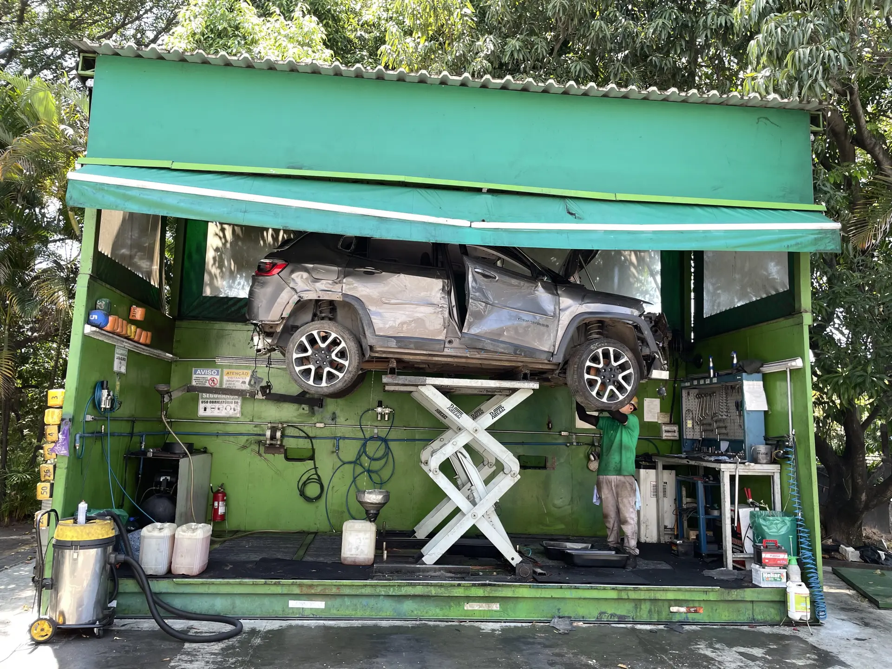
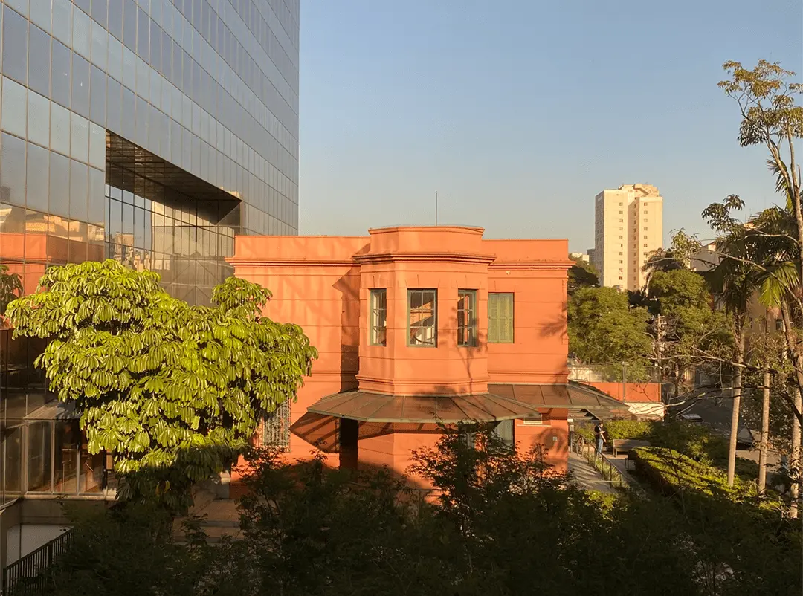

Artigos
-
Porto comemora 15 anos do programa de Formação da TI e lança 16ª edição
Há 15 anos, essa iniciativa é conhecida por gerar oportunidade para as pessoas aprenderem e se desenvolverem no segmento de tecnologia, colaborando com a inclusão digital na sociedade e promovendo diversidade na área
-
Superação e transformação profissional em TI
Depois de três longos anos em uma posição insatisfatória, Alliny tomou uma decisão corajosa
-
Porto - ASG: Conheça as nossas ações de Governança Corporativa
ASG (Ambiental, Social e Governança) é a sigla para definir as iniciativas ambientais, sociais e de governança de uma empresa. Neste artigo, você vai compreender como a Porto organiza seu setor de governança
-
Desenvolvendo Talentos para a Transformação Tecnológica
Neste artigo, exploraremos como o talento pode moldar nossa realidade, discutiremos sua relevância no desenvolvimento pessoal e social, bem como a importância de formar e capacitar talentos capazes de enfrentar as demandas crescentes do mercado
-
A importância do Corretor de seguros
Atualmente é muito fácil contratar um seguro. Mas todo o processo de contratação de seguros precisa obrigatoriamente da participação de um Corretor
-
Desenvolvendo Agilidade e Dominando o Pensamento Ágil para o Sucesso
No mundo atual, onde as mudanças ocorrem de forma acelerada, a capacidade de se adaptar e responder rapidamente se tornou essencial para indivíduos e organizações
-
Renova Ecopeças é pioneira na reciclagem de veículos
A Renova Ecopeças está completando 10 anos de muita sustentabilidade, responsabilidade e compromisso ambiental, que potencializa os objetivos da Porto sobre desenvolvimento social, estabelecidos com a assinatura do Pacto Global da ONU
-
Tech for Good – Como a tecnologia pode melhorar a sociedade?
Tech for Good é um movimento que tem como objetivo usar a tecnologia para o bem, com inuito de resolver problemas sociais e ambientais
-
Conheça a história do Casarão Porto Seguro
O Casarão Dino Bueno (hoje chamado de Casarão Porto Seguro) foi construído em 1895 para servir de residência para o promotor público Dino Bueno
-
Conheça o Programa Meu Porto Seguro
Para reverter parte do cenário negativo decorrente da crise, a Porto Seguro lança um projeto de impacto social que oferece oportunidades de trabalho para 10 mil pessoas.
Artigos Mais Visualizados
| Título | Data | Visualizações |
|---|---|---|
| Porto comemora 15 anos do programa de Formação da TI e lança 16ª edição | 02/04/2023 | 62315 |
| Superação e transformação profissional em TI | 06/06/2023 | 42522 |
| A importância do Corretor de seguros | 25/05/2023 | 39816 |
| Desenvolvendo Agilidade e Dominando o Pensamento Ágil para o Sucesso | 01/06/2023 | 37311 |
| Conheça a história do Casarão Porto Seguro | 30/05/2023 | 37129 |
| Desenvolvendo Talentos para a Transformação Tecnológica | 10/06/2023 | 25004 |
| Porto - ASG: Conheça as nossas ações de Governança Corporativa | 07/06/2023 | 19512 |
| Tech for Good – Como a tecnologia pode melhorar a sociedade? | 16/06/2023 | 17899 |
| Renova Ecopeças é pioneira na reciclagem de veículos | 19/06/2023 | 14956 |
| Conheça o Programa Meu Porto Seguro | 10/05/2023 | 13981 |